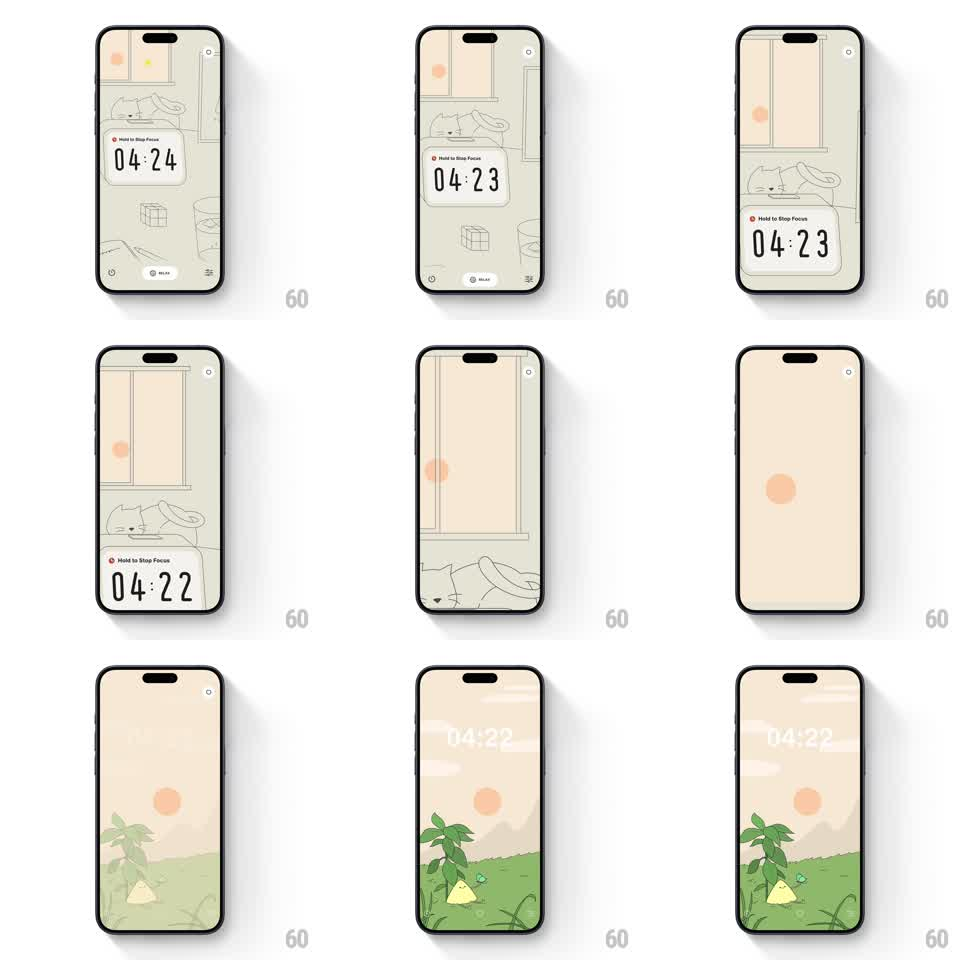

Media
Frame-by-frame

Rebuild this animation 1:1: DTD Sounds' screensaver morph - the illustrated room (dog, window, timer card) slides away while its little sun stays pinned, morphing into the sun of the next scene as a meadow landscape grows in beneath it.

Rebuild this animation 1:1: DTD Sounds' screensaver morph - the illustrated room (dog, window, timer card) slides away while its little sun stays pinned, morphing into the sun of the next scene as a meadow landscape grows in beneath it.
## Integration
Integration: stack-agnostic spec - springs given as stiffness/damping, timed motions as duration + curve; map every value to your framework and animation library of choice.
## Scene
Two illustrated states: the focus room (cream line-art interior, dog on a couch, a small sun outside the window, "Hold to Stop Focus" timer card) and the meadow screensaver (peach sky, green grass, a plant, a tent, a butterfly, the same sun in the sky with the time ghosted into it).
## Motion spec
Pattern: shared-element sun anchoring a full scene morph.
- The timer card slides down and off (translateY, 300ms) while the room's line art pans up and out (translateY -> -60%, 500ms, ease-in-out) - the room leaves upward, the window's sun stays exactly in place.
- The background washes from cream to warm peach around the unmoving sun (color tween, 500ms).
- The meadow grows in from the bottom: grass layer slides up (translateY 40% -> 0, 450ms), then the plant and tent scale up from their bases (spring ~300/16, 80ms apart), the butterfly flutters in (small arcing path, 600ms).
- The time ("04:22") fades into the sky beside the sun, ghosted at 40% opacity (300ms).
- The sun breathes gently once settled (scale 1 -> 1.05 -> 1, 4s loop) and the butterfly idles around the plant.
## Calibration
- The sun is the anchor: it must not translate a single pixel during the whole morph.
- Line-art style is consistent across both scenes - same stroke weight, same flat fills.
## Reduced motion
Scenes crossfade (400ms) with the sun static.
## Don't miss
- The ghosted time sits in the sky, not on a card - the screensaver has no chrome.
- The meadow elements grow from their own bases - plant from the grass line, tent from the ground.